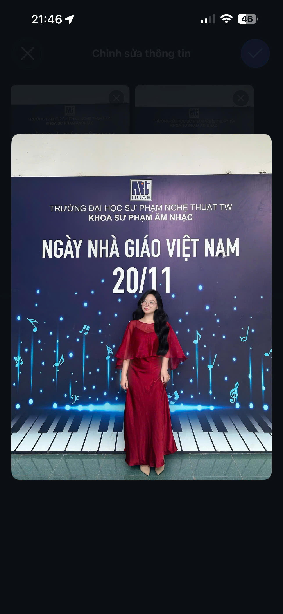

Câu 1: Trang Giới thiệu (About Me)
GIỚI THIỆU BẢN THÂN & MỤC TIÊU HỌC TẬP

SINH VIÊNLê Thuý An
"Âm nhạc dân gian là cội nguồn tâm hồn dân tộc. Sứ mệnh của người giáo viên nghệ thuật hôm nay là dùng công nghệ để khoác lên làn điệu quê hương một sức sống mới, tươi trẻ và cuốn hút."
🎯 Mục tiêu học tập cá nhân
Trang bị kỹ năng số thực chiến và tư duy làm chủ công nghệ mới, hướng tới việc vận dụng AI có chọn lọc trong thiết kế học liệu môn Âm nhạc 7:
- Làm chủ kỹ thuật thiết kế câu lệnh Prompt Engineering (R-T-C-O-F).
- Thẩm định chất lượng tài liệu khoa học theo bộ tiêu chí chuẩn CRAAP.
- Tạo bản phối Acoustic – Lofi cho bài dân ca "Đi cấy" với âm sắc sáo trúc, đàn bầu, đàn tranh ở tốc độ 88 BPM chuẩn sư phạm.
🌐 Mục tiêu xây dựng Portfolio số
Hồ sơ học tập điện tử trên GitHub Pages khẳng định năng lực tự chủ và dấu ấn sáng tạo chuyên nghiệp của sinh viên:
- Tích hợp và hệ thống hóa 06 bài tập thực hành theo mạch nghiên cứu xuyên suốt.
- Trình diễn sản phẩm đa phương tiện: văn bản, kịch bản Prompt, audio AI và slide bài giảng.
- Thực hành nghiêm túc 5 Quy tắc vàng của AI, bảo đảm liêm chính học thuật tuyệt đối.